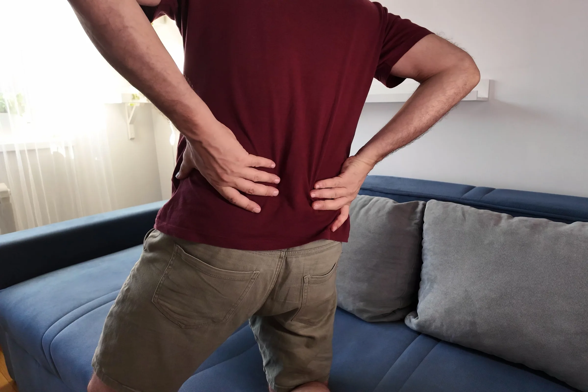

- Serving Fort Collins Since 2005
- Palmer College of Chiropractic Graduate
- 4.8 · 264 Google reviews
- In Network With BCBS and UHC
SINCE 2005
SERVING FORT COLLINS
Your Chiropractor
Meet Dr. Nathan Irwin
Doctor of Chiropractic • Palmer College of Chiropractic, Davenport • Founded Irwin Family Chiropractic in 2005
Dr. Nathan Irwin DC has been helping patients become healthier and happier for many years with Fort Collins chiropractor treatment services. A graduate of Palmer College of Chiropractic, Davenport, Dr. Irwin founded Irwin Family Chiropractic in 2005 in hopes of treating his patients with a “whole-body approach” and family-oriented mindset. He has now incorporated physical medicine and numerous other exciting treatment styles into his office, thus founding Advanced Healthcare. His patients can now enjoy a wide variety of unique and individualized Fort Collins chiropractic treatments to help them achieve their goals.
Watch: Chiropractic care at Advanced Healthcare with Dr. Nathan Irwin
OUR EXPERTISE
Chiropractic Care in Fort Collins
Advanced Healthcare is a chiropractic office on S Shields St in Fort Collins, led by Dr. Nathan Irwin, a graduate of Palmer College of Chiropractic who has cared for Fort Collins patients since 2005. The first visit is a thorough exam, usually about an hour, so we can find the cause before we start. You then choose the type of care that fits your goals, from short-term relief to corrective work and wellness care.
 Explore Our Services
Explore Our Services
-
Chiropractic Adjustments
Specific adjustments matched to what your spine needs, not a one-size-fits-all routine. Gentle adjustments restore proper alignment, ease pain and support your body's natural healing, with simple movement guidance so the relief holds between visits. Chiropractic care in Fort Collins
-
Conditions We Treat
Care for back pain, neck pain, headaches and migraines, sciatica and disc injuries, plus wellness care for people who would rather keep moving well. Every plan starts with a thorough first exam, and you choose the type of care that fits your goals. We focus on the cause of the problem, not just a quick adjustment.
-
A Whole-Body, Family-Oriented Approach
Dr. Irwin founded his practice in 2005 with a whole-body approach and a family-oriented mindset. Every visit starts with listening, then a care plan built around you, pairing adjustments with stretches, strengthening, massage and rehab. Meet Dr. Irwin
OUR SERVICES
What Can a Fort Collins Chiropractor Help With?

Our first priority is understanding where you are, then helping you get out of pain. From there, the aim is to help you recover, move better, and stay well, whether you are dealing with musculoskeletal pain, a sports or work injury, or focused on your overall health and movement.
Care here pairs chiropractic adjustments with SoftWave, shockwave, neuropathy care, spinal decompression, massage, dry needling and rehab, each aimed at finding the root cause of your discomfort.
New Patient SpecialChiropractic Care May Help These Common Symptoms

BACK PAIN

NECK PAIN
NECK PAIN
The desk, the phone, and the pillow you actually use matter more than most advice admits.
LEARN MORE
HEADACHES & MIGRAINES

SCIATICA
SCIATICA
Sciatica is a symptom, and the useful question is where the nerve is being irritated.
LEARN MORE
DISC INJURY
WELLNESS
WELLNESS
Ongoing care for people who would rather keep moving well than wait for the next problem.
LEARN MOREOUR REVIEWS
What People Say About Advanced Healthcare
From the Blog
Tips and articles from Advanced Healthcare in Fort Collins.

3 Tips from a Fort Collins CO Chiropractor
Are you tired of dealing with persistent back pain, neck stiffness, or shoulder discomfort?
Read on the current site
Fort Collins CO Chiropractor Talks about Bulging Discs
Are you tired of being sidelined by back pain?
Read on the current siteFort Collins CO Chiropractor Discusses Different Types of Headaches
Are headaches turning your days into a constant battle between you and pain?
Read on the current siteFUN FACTS
Things you might not know about Chiropractic
Chiropractic training is rigorous. After undergraduate study, a chiropractor completes years of doctoral education and clinical training before earning a license. Gentle, precise adjustments are the core of the work, aimed at restoring alignment so nerves and muscles can function the way they should. If you would like to schedule a new patient visit, call our office at (970) 472-8333.

CHIROPRACTIC FAQS
Answers to some of the most common questions we hear from patients.
Your first visit is a thorough new patient exam, usually about an hour, not a one-page form and a quick adjustment. We take a complete health history and evaluate how you move, including range of motion, palpation, and, when needed, muscle testing and orthopedic and neurological tests, before any adjustment. If x-rays are needed, we take them in the clinic. Some people are adjusted the same day. More complex cases return for a report of findings, then choose a type of care. See what a first visit includes.
No. You can book directly with our office; a referral from another provider is not required to be seen.
Chiropractic care is widely used and well established. We tailor every plan to your body and history, and we will always explain what we are doing and why.
It depends on your goals and what the exam finds. Some people want visit-to-visit care just to get the pain out of the area. Relief care is typically two to six weeks, with the goal of increasing range of motion and decreasing muscle guarding and pain. Most patients want more than just symptoms gone, and choose a corrective style of care that includes strength-based rehabilitation. After that, some people move on to wellness care. Read about the types of care. At the end of the day, it is your choice, and the goal is to get you as far along as you want to go.
No referral is needed. We are in network with BCBS and UHC. Call our office at (970) 472-8333 with any questions about your plan.
Everyday aches from desks and phones, back and neck pain, headaches, sciatica, and the strains that come with sport, work, and pregnancy. If you are not sure whether we can help, call and ask.
Most people feel relief, not pain. We match the technique and the pressure to your body, and we check in with you throughout.
Either. Some people come in for a single problem and move on; others build regular care into their routine. We will be honest about what we think you need.
It varies by person and problem. Some feel a change quickly, others need a little time. We will keep you posted on what to expect as we go.
Just yourself and any relevant history, such as past imaging or a note from another provider if you have one. Our front desk will handle the rest.